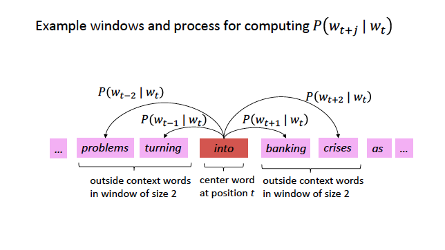
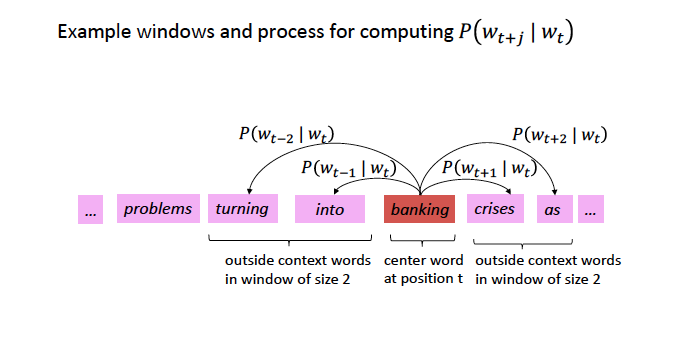
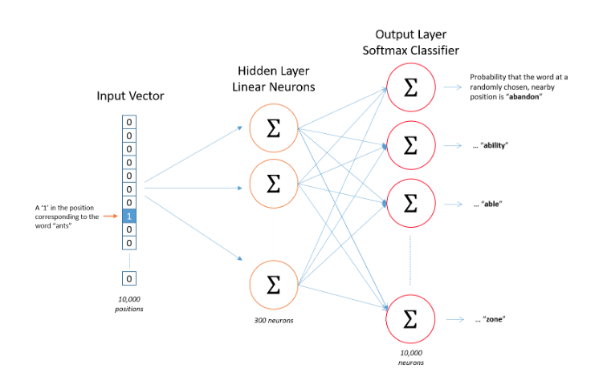
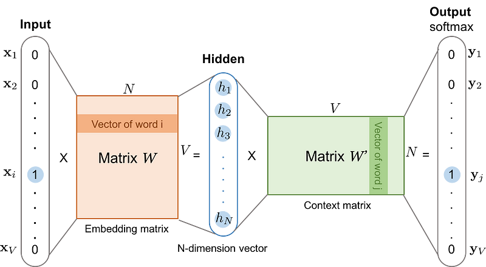
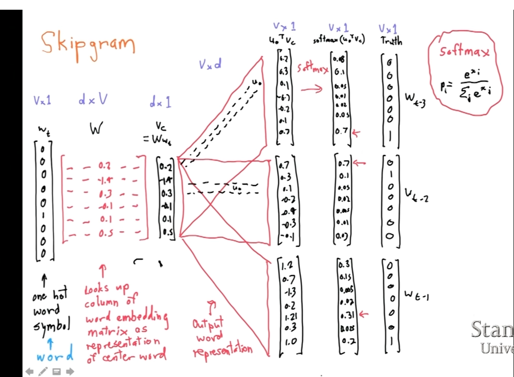
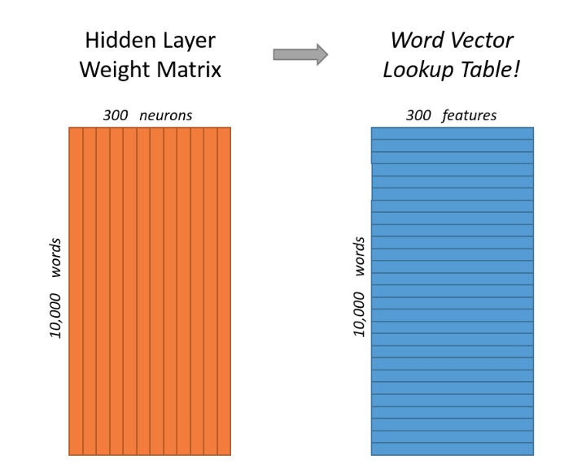
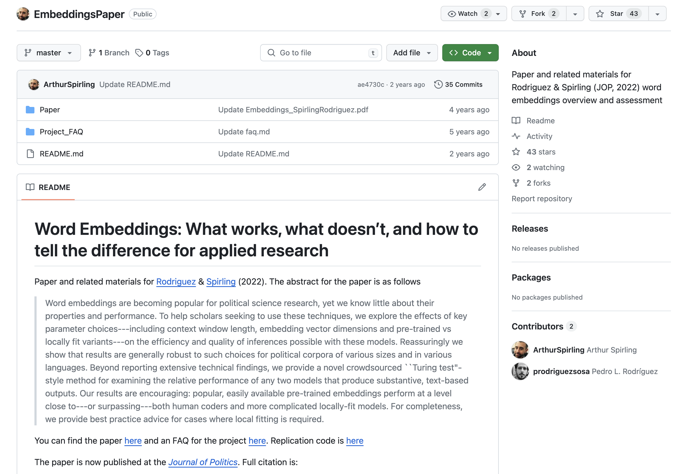

Week 9: Word Embeddings - Theory
Logistics: Replication
Word Embeddings
Semantics, Distributional Hypothesis, Moving from Sparse to Dense Vectors
Word2Vec Algorithm
Mathematical Model
Estimate with Neural Networks
Estimate using Co-Occurance matrices
Coding: Either today or next week.
Next week: we will see several applications of word embeddings
You will do a presentation of your replication in two week.
Each group will have about 20 minutes (15 presentation + 5 Q&A)
You presentation should have the following sections:
- Introduction: introduction summarizing the article.
- Methods: data used in the article
- Results: the results you were able to replicate
- Differences: any differences between your results and the authors'
- Autopsy of the replication: what did work and what did not work
- Extension: what would you do differently if you were to write this article today? Where would you innovate?By Friday EOD of the replication week, you should share with me and all your colleagues (share on the slack channel) your replication report. The replication report should be:
a GitHub repo with a well-detailed readme. See a model here: https://github.com/TiagoVentura/winning_plosone
your presentation as a pdf
the code used in the replication as a notebook (Markdown or Jupyter)
a report with a maximum of 5 pages (it is fine if you do less than that) summarizing the replication process, with emphasis on four sections of your presentation: Results, Differences, Autopsy, and Extension.
In the vector space model, we learned:
A document \(D_i\) is represented as a collection of features \(W\) (words, tokens, n-grams..)
Each feature \(w_i\) can be place in a real line, then a document \(D_i\) is a point in a \(W\) dimensional space.
Embedded in this model, there is the idea we represent words as a one-hot encoding.
“you shall know a word by the company it keeps.” J. R. Firth 1957
Distributional semantics: words that are used in the same contexts tend to be similar in their meaning.
How can we use this insight to build a word representation?
Learn this representation from the unlabeled data.
Move from sparse representation to dense representation
Represent words as vectors of numbers with high number of dimensions
Each feature on this vectors embeds some information from the word
Encoding similarity: vectors are not orthogonal anymore!
Encodes Meaning: by learning the context, I can somewhat learn what a word means.
Automatic Generalization: learn about one word allow us to automatically learn about related words
As a consequence:
Word Embeddings improves several NLP/Text-as-Data Tasks.
Allows to deal with unseen words.
Form the core idea of state-of-the-art models, such as LLMs.
We have a large corpus (“body”) of text: a long list of words
Every word in a fixed vocabulary is represented by a vector
Go through each position t in the text, which has a center word \(c\) and context (“outside”) words \(t\)
Use the similarity of the word vectors for \(c\) and \(t\) to calculate the probability of of t given c (or vice versa)
Keep adjusting the word vectors to maximize this probability

Source: CS224N

Source: CS224N
To estimate the model, we first need to formalize the probability function we want to estimate.
In logistic regression: probability of a event occur given data X and parameters \(\beta\):
\[ P(y=1| X, \beta ) = X * \beta + \epsilon\]
\(X * \beta\) is not a proper probability function, so we make it to proper probability by using a logit transformation.
\(P(y=1|X, \beta ) = \frac{exp(XB)}{1 + exp(XB)}\)
Use transformation inside of a bernouilli distribution, get the likelihood function, and find the parameters using maximum likelihood estimation:
\[L(\beta) = \prod_{i=1}^n \bigl[\sigma(X_i^\top \beta)\bigr]^{y_i} \bigl[1 - \sigma(X_i^\top \beta)\bigr]^{1 - y_i} \]
This is the probability we want to estimate. To do so, we need to add parameters to it:
\[P(w_t|w_{t-1}) = \frac{exp(u_c \cdot u_t)}{{\sum_{w}^V exp(u_c*u_w)}}\]
\[P(w_t|w_{t-1}) = \frac{exp(u_c \cdot u_t)}{{\sum_{w}^V exp(u_c*u_w)}}\]
Dot product compares similarity between vectors
numerator: center vs target vectors
exponentiation makes everything positive
Denominator: normalize over entire vocabulary to give probability distribution
What is the meaning of softmax?
max: assign high values to be 1
soft: still assigns some probability to smaller values
generalization of the logit ~ multinomial logistic function.


Step 1: Compute Hidden Layer Representation
Input: A one-hot vector X where only the center word c has a value of 1, all others are 0 (size 1 x V)
Goal: Convert this into a dense vector of size D, where D is much smaller than the vocabulary size
The word embedding matrix W has size V × D, where:
Multiplication XW:
This selects the i-th row of W, which is the word embedding for c
##Example
Let’s practice with a vocabulary of size 5, a embedding with 3 dimensions, and the task is to predict ONLY the next word.
Step 1: v_{1,5} * W_{5,3} = C_{1,3}
\[ \mathbf{v} = \begin{bmatrix} 0 \\ 0 \\ 1 \\ 0 \\ 0 \end{bmatrix} \]
\[ \mathbf{W} = \begin{bmatrix} .1 & .3 & -.23 \\ .2 & -.06 & -.26 \\ .3 & -.16& -.13 \\ .5 & .26 & -.03 \\ .6 & -.46 & -.53 \end{bmatrix} \]
\[v_T*W = C = \begin{bmatrix}.3 & -.16& -.13 \end{bmatrix} \]
Step 2 Goal: Predict which words are likely to appear near the center word
The hidden representation h = XW is multiplied by a second weight matrix W′ (initialized randomly)
This produces a |V|-dimensional vector of unnormalized scores (logits), one for each word in the vocabulary. THIS IS A MEASURE FOR SIMILARITY FOR FREE!!
Compute the output scores (DOT Product between center and all other words!!!):
Apply the softmax function to convert logits into probabilities:
The output probabilities indicate how likely each word is to appear in the context of the center word c
Step 2: \(C_{1,3} * W2_{3,5} = P_{1,5}\)
\[ C_{1,3} * W2_{3,5} = P_{1,5} \]
\[ \begin{bmatrix}.3 & -.16& -.13 \end{bmatrix} * \begin{bmatrix} .1 & .3 & -.23 & .3 & .5 \\ .2 & -.06 & -.26 & .3 & .5 \\ .3 & -.16& -.13 * .3 & .5\\ \end{bmatrix} \]
\[ P_{1,5}= \begin{bmatrix} -0.041 & 0.1204 & -0.02233 & -0.023 & 0.07 \end{bmatrix} \]
\[ P(w_t|w_{t-1}) = \frac{exp(0.041)}{{exp(-0.041) + exp(0.1204) + exp(-0.02233) + exp(-0.023) + exp(0.07)}} \]
After that, you calculate the loss function with the negative likelihood (because you know which word you are predicting)
Use the loss to perform gradient descent and update the parameters
For each position \(t\), predict context words within a window of fixed size \(m\), given center word \(w\).
Likelihood Function with Probabilities
\[ L= \prod_{t=1}^{T} \ \prod_{\substack{-m \leq j \leq m \\ j \neq 0}} P(w_{t+j}|w_t) \]
Likelihood Function
\[ L= \prod_{t=1}^{T} \ \prod_{\substack{-m \leq j \leq m \\ j \neq 0}} \frac{\exp\left( \mathbf{u}_{w_{t+j}}^\top \mathbf{v}_{w_t} \right)} {\sum_{w \in V} \exp\left( \mathbf{u}_w^\top \mathbf{v}_{w_t} \right)} \] Log-Likelihood
\[ \log L= \sum_{t=1}^{T} \ \sum_{\substack{-m \leq j \leq m \\ j \neq 0}} \log \left( \frac{\exp\left( \mathbf{u}_{w_{t+j}}^\top \mathbf{v}_{w_t} \right)} {\sum_{w \in V} \exp\left( \mathbf{u}_w^\top \mathbf{v}_{w_t} \right)} \right) \]
Negative Log-Likelihood
\[ \log \mathcal{L}_{\text{full}} = \sum_{t=1}^{T} \ \sum_{\substack{-m \leq j \leq m \\ j \neq 0}} \left[ - \mathbf{u}_{w_{t+j}}^\top \mathbf{v}_{w_t} + \log \sum_{w \in V} \exp\left( \mathbf{u}_w^\top \mathbf{v}_{w_t} \right) \right] \] First term: Rewards for assigning high probability to the correct word.
Second Term: Penalty for assigning high probabilities to other wrong words


Step 1: Input
Step 2: Embedding Representation
Step 3: Prediction
Step 4: Loss Computation
Embeddings need quite a lot of text to train: e.g. want to disambiguate meanings from contexts. You can download pre-trained, or get the code and train locally
Word2Vec is trained on the Google News dataset (∼ 100B words, 2013)
GloVe are trained on different things: Wikipedia (2014) + Gigaword (6B words), Common Crawl, Twitter. And uses a co-occurence matrix instead of Neural Networks (More about that later today)
fastext from facebook
Explain these three concepts: Self-Supervision, Distributional Hypothesis, Dense Representation. And put these three concepts together to explain how word vectors can capture meaning of words.
What are the two main strategies to estimate word embeddings? One is named Glove, and the other is named Word2Vec
Are word embeddings still a bag-of-word representation model?
Are word2vec algorithms unsupervised or supervised learning?
When using/training embeddings, we face some key decisions:
Dimensionality: dimensions of the word vectors (50, 100, 300)
Window Size: how big of a window you want around the center word (5-10 good balance)
Minimum Count: how many times a word has to appear in the corpus for it to be assigned a vector (5 default in Word2Vec; for small, 1-3)
Model Type: skip-gram or continuous bag-of-words
Number of Iterations: number of iterations (epochs) over the corpus (5 common default; 10-20 useful for smaller datasets)
::::: columns ::: {.column width=“100%”}

:::
Consider: Window size, Number of dimensions for the embedding matrix, Pre-trained vs locally fit variants, Which algorithm to use?
Work in 4 groups, and tell me what is the response the authors give to each of these decisions. Share your screen to show the graph with this result and explain it.
Count-based methods rely on word co-occurrence to learn embeddings:
Compute Unigram Probabilities: Measure how often each word appears in the corpus
Compute Word Co-occurrences: Count how often words appear together across the entire corpus
Calculate PMI (Pointwise Mutual Information): Measures how much more often two words co-occur than expected by chance
\[ PMI(\text{word}_1, \text{word}_2) = \log \frac{P(\text{word}_1, \text{word}_2)}{P(\text{word}_1) \, P(\text{word}_2)} \]
Construct a Co-occurrence Matrix: Store PMI values in a large word-by-word matrix
Apply Singular Value Decomposition (SVD): Reduce the matrix to extract meaningful lower-dimensional word vectors
SVD is a matrix factorization technique used in linear algebra and data science
Reduces dimensionality by identifying important patterns in data: splits the matrix into fundamental patterns (singular vectors), ranked by importance (singular values)
No local information, so does not produce great embeddings. But very efficient computationally.
Glove algorithm is a variation of this approach.
Text-as-Data